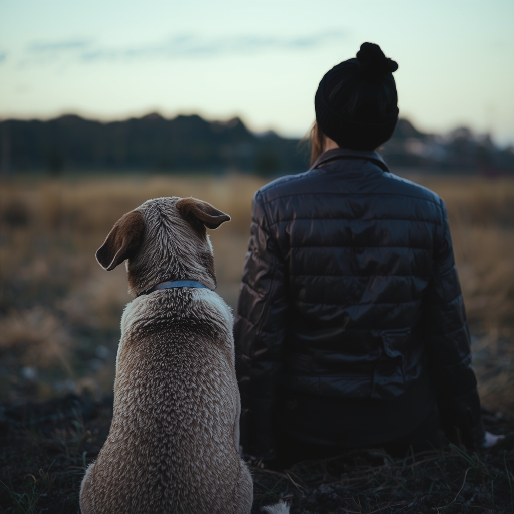

Compassion
We serve people without reducing them to the hardest chapter of their lives.
We exist for the moments when life falls apart — but love doesn’t.
Our purpose
Second Leash was created to address a painful gap in animal welfare and human services: people are often forced to give up a beloved dog because they need treatment, face incarceration, enter the hospital, lose housing, or experience another temporary crisis.
Traditional shelter and rescue systems are built primarily around adoption. Second Leash is different. We focus on preventing unnecessary surrender by arranging temporary foster care and working toward reunification whenever it is safe and practical.
Our belief is simple: getting help should not cost someone their best friend.

Our values
We serve people without reducing them to the hardest chapter of their lives.
We consider the wellbeing of the dog, owner, foster household, volunteers, and community in every placement.
Temporary care is designed to preserve ownership and support a responsible return whenever possible.
We explain our limits, use of donations, and placement process honestly.
We collaborate with treatment providers, reentry programs, social workers, animal welfare organizations, and community partners.
People deserve support that respects their privacy, choices, and relationship with their dog.
Second Leash is based in Searcy, Arkansas. Our primary service focus is Arkansas, but we have arranged placement in other states and will do so again when a suitable foster, transportation, communication plan, and available resources make the placement responsible.
Second Leash is foster-based. We do not currently operate a public shelter or walk-in facility. Placement availability changes with volunteer foster capacity, funding, transportation, and each dog’s needs. We do not guarantee placement.
If you're facing a temporary crisis, start with our secure online forms.
Second Leash is recognized as a 501(c)(3) tax-exempt nonprofit organization. EIN: 33-3031631. Contributions may be tax-deductible to the extent allowed by law.